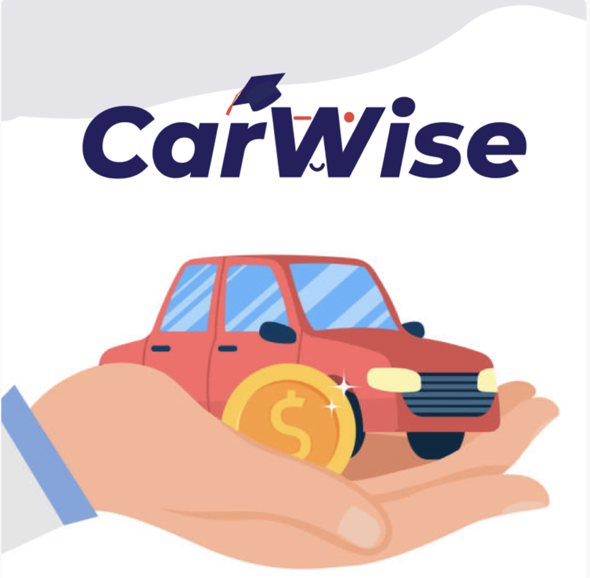
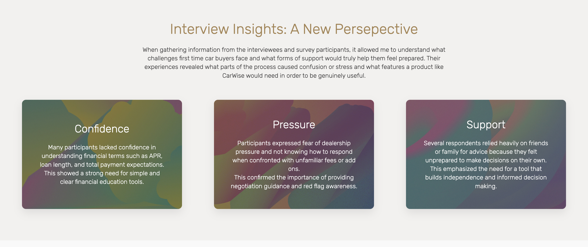
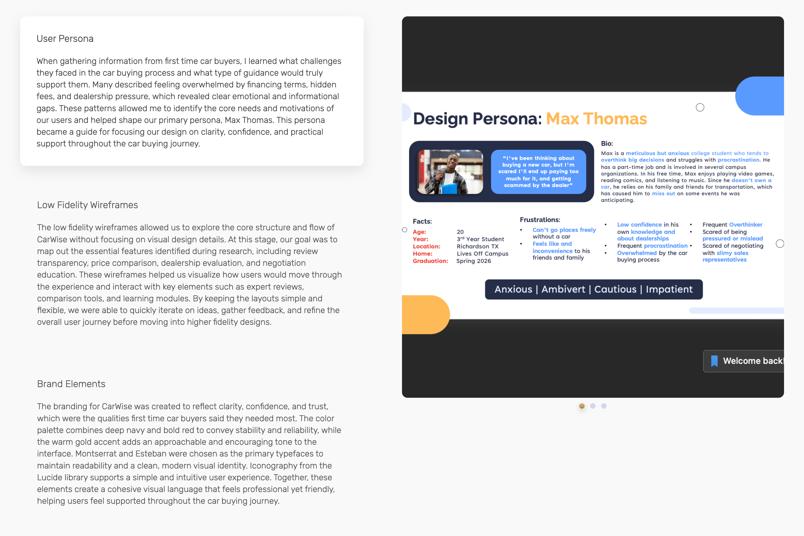
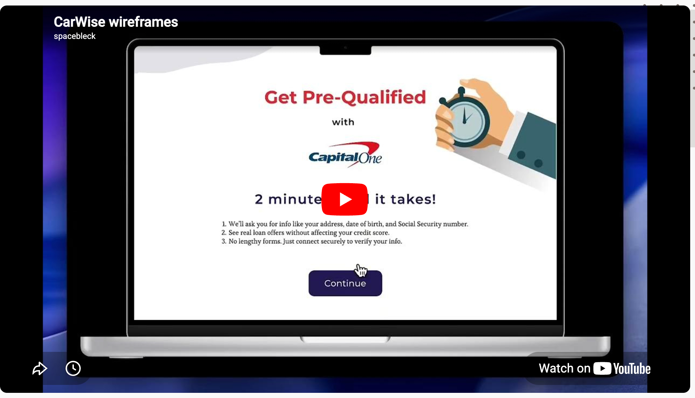

CAPITALONE CASE STUDY
CarWise — Powered by Capital One
A guided digital experience that helps first-time car buyers prepare for financing, understand pricing, and approach dealerships with more confidence.
Research Lead · Survey, interview insights, and wireframes
Urwah Alpial, Angelly Tejada, Chunnu Ghimire, Asmaa Adi, and Mason Thomas · Applied Experience Design team project
Figma, Adobe Creative Suite, Procreate, Notion, and Microsoft PowerPoint · Surveys, interviews, and secondary research

01 / CONTEXT
Making the first car purchase less overwhelming
Capital One designers challenged our team to investigate why buying a car feels confusing and intimidating for first-time buyers. Our research identified gaps in financing knowledge, realistic pricing, hidden fees, and negotiation preparation. CarWise was designed to bring guidance and transparency to those decisions.
02 / RESEARCH
Listening to first-time buyers
Our survey received 110 responses, and we interviewed five participants, primarily students and alumni ages 18–23. I asked about financing confidence, dealership concerns, missing information, sources of advice, and the tools that could make buying a car less stressful. Findings centered on confidence, pressure, and support: buyers wanted clear financial education, negotiation guidance, and help making informed decisions independently.
- 58% had never checked their credit score.
- 78% felt anxious and unsure how to begin buying a car with a loan.
- 74% were confused by auto and banking terms such as APR.
- 90% were under 25, and 80% were students.

03 / PROCESS
Turning insights into a guided experience
Research informed our primary persona, Max Thomas, and a flow built around clarity, confidence, and practical support. We explored review transparency, price comparisons, dealership evaluation, and negotiation education through low-fidelity wireframes. Comparative analysis included Chase Bank’s Education Center, NerdWallet, and Reddit’s personal finance community. The team developed a visual identity using navy, red, and warm gold, with Montserrat and Esteban typography and Lucide iconography.

04 / OUTCOME
A research-informed CarWise prototype
The team created a Figma prototype bringing together financial preparation, transparent pricing, and dealership support. Research outputs included survey findings, interview insights, a persona, and wireframes. The supplied case study documents the concept and prototype; it does not report a product launch or measured post-launch results.

05 / REFLECTION
Clarity, confidence, and practical support
The work highlighted that first-time buyers need emotional support alongside financial information. Their experiences shaped a design direction focused on understandable guidance and preparation before visiting a dealership. A next step would be to test the prototype with first-time buyers and use their feedback to refine the flow.
Replace bracketed prompts with your own writing. Only publish images, research, or project details you have permission to share.